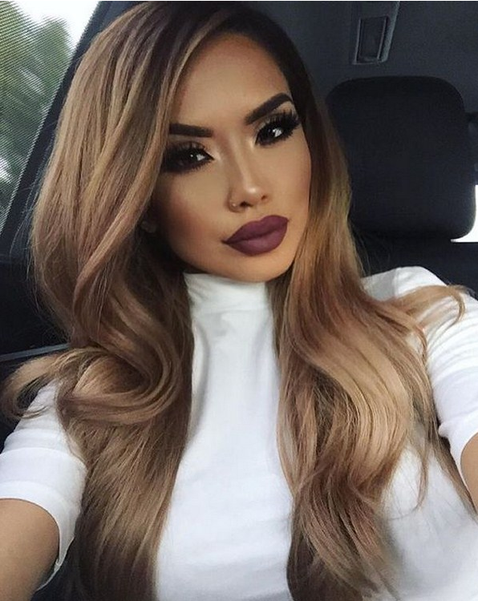
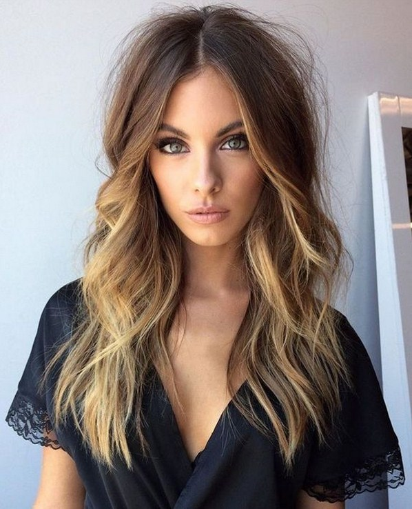
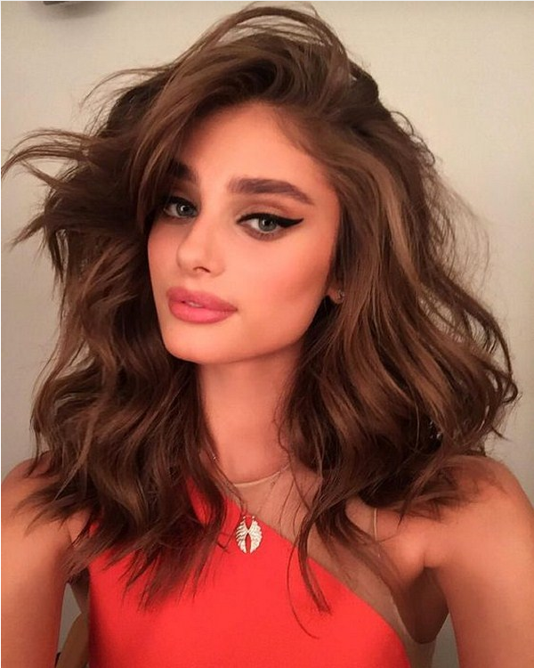
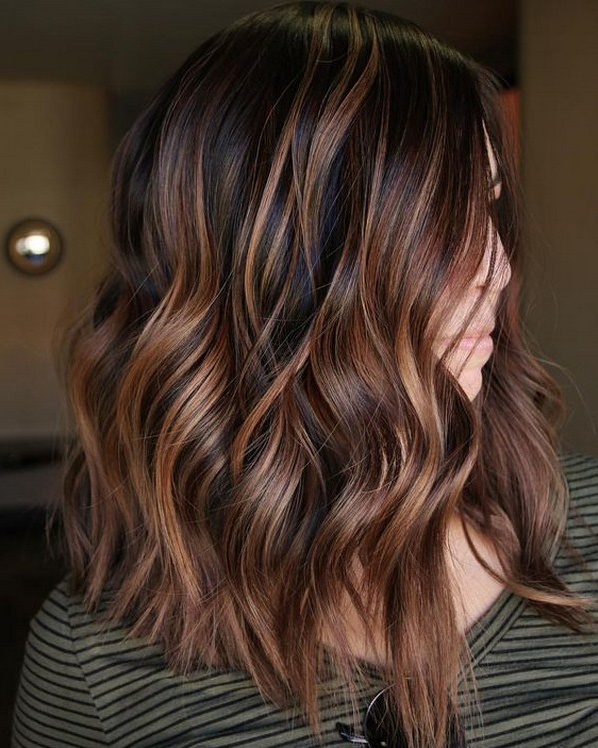
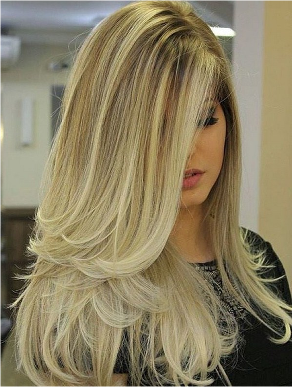
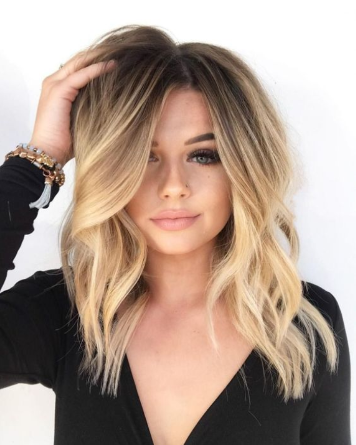

В погоне за безупречной внешностью, новым имиджем и превосходным стилем многие дамы готовы потратить немало времени и сил. Но если вы действительно хотите кардинальных перемен во внешности, тогда вам стоит начать с модной стрижки.
Кроме того, изумительность стрижек еще и в том, что прически могут скрыть некоторые изъяны во внешности, делая вас неотразимыми и акцентируя внимание на достоинствах именно благодаря супермодной и чудесной стрижке.


Именно топовые стрижки станут той «палочкой-выручалочкой», которой под силу преобразить женщин до неузнаваемости, да и не только внешне!
И если у вас есть сомнения, подойдет ли вам подобный тип современной и ультрастильной стрижки 2020-2021 года, что вы для себя присмотрели на фото стрижек, то всегда спросите совета профи, что раскроет вам секреты и тонкости каждой и новомодных стрижек на любую величину прядок.
Короткая стрижка сделает вас моложе, скинув пару лет всего лишь выбрав трендовый в этом сезоне сессон. Стрижка закрывает лоб и подойдет для квадратного лица, скрывая угловатости и смягчая их. Отлично сморится на круглолицых дамах, удлиняя личико. Но вот выполнить изумительный сессон не каждому мастеру под силу, технология сложная и требует особого мастерства и старания.


С появлением интересных и ультратрендовых новинок стрижек 2020-2021, не теряет свои топовые позиции каре. Выполненная на модном цвете прядей, с волнами и завитками, стрижка сможет выглядеть совершенно невообразимо и по-новому, особенно с тонкими волосами. В средней длине стрижка каре не имеет равных. Позволяя носить ее по-разному – с ровной, рваной, на две стороны челкой или же асимметрией.
Как ни странно, боб и боб-каре не теряются среди иных типов мегамодных на сегодня стрижек 2020-2021. Свежие подходы в создании стрижки и новые элементы боба позволяют по-новму взглянуть на привычный и любимый всеми боб. Волнистость и выбривание, необыкновенный цвет и челочка сделают ваш боб еще краше и замечательней, а волосы обретут новое сияние и живость в стрижке боб и всех ее направлениях.

Тренды женских стрижек настолько разноплановы, что вы можете изменить привычную прическу кардинальным решением укладки или же внести лишь небольшие коррективы, что позволят освежить внешность с новой стрижкой.
Для истинных красавиц, не желающих расставаться со своей гордостью – длинными прядями, найдутся отличные решения, освежающие и обновляющие луки со стрижками в данной длине.

На удивление мегамодными будут не лишь средние, но и короткие стили стрижек в разных направлениях – от ультракоротких до укладок с удлинением и асимметрией.
Главными экспериментаторами в области бьюти-идей трендовых стрижек и модных парикмахерских новшеств являются блогеры, что держат руку на пульсе модной индустрии парикмахерского мастерства и готовы демонстрировать лучшие тенденции стрижек для дам разных возрастов и типов внешности.
Наличие челки будет одним из ведущих модных веяний в стрижках наступающего периода. Манера исполнения челки в топовых стрижках определит, какое впечатление вы будете производить на окружающих. Наиболее заметной модная челка будет в длинной стрижке, а вот модные укороченные направления стрижек с челкой или длинные челки окажутся не так кардинальны.
Однозначно челка идет не всем и тут стоит хорошенько подумать и непременно посоветоваться с профи мастером, стоит ли решаться на челку в своей стрижке, и на какую именно. Прямая, рваная, длинная, по диагонали и др. подтипы челок отлично скорректируют черты и прибавят уверенности. Вот только ухаживать за стрижками с челкой придется более усиленно.
А если ты хочешь больше идей для обновления стиля, тогда тебе сюда
Все права защищены